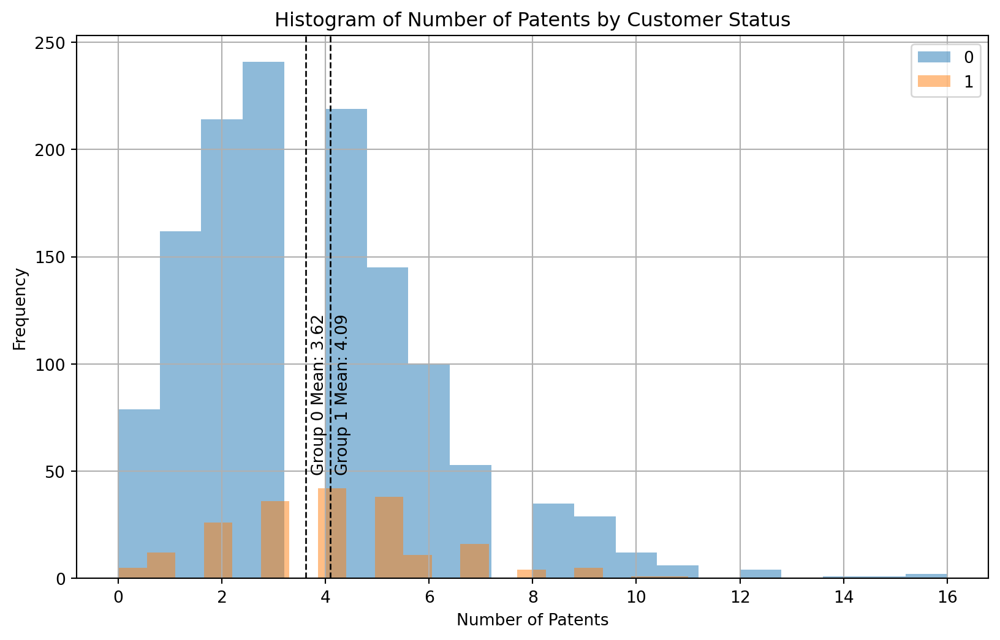
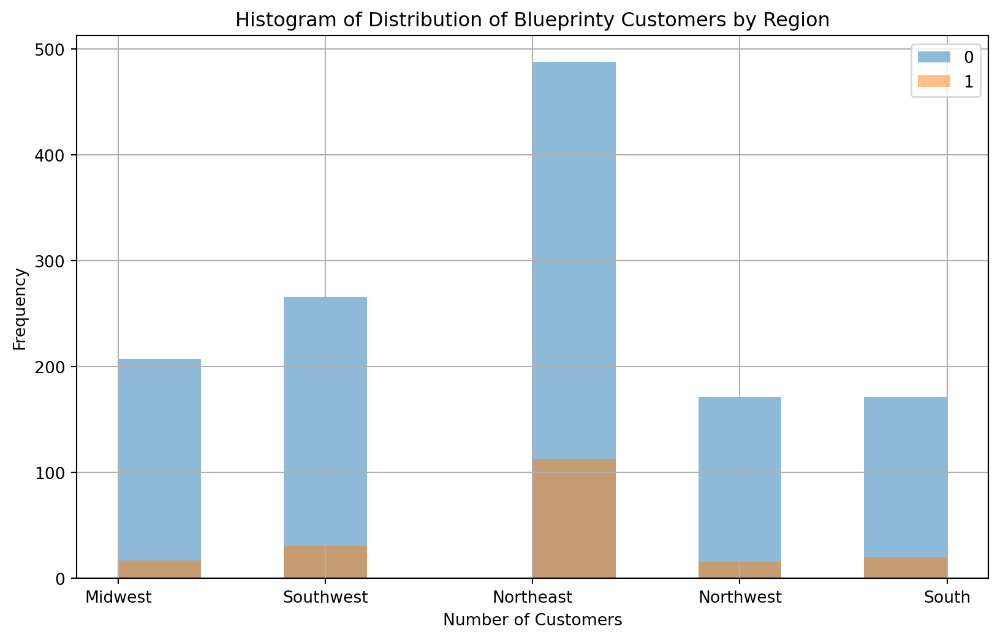
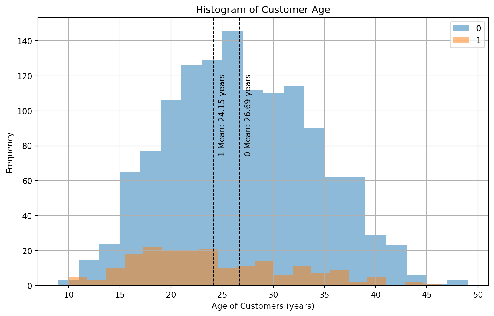
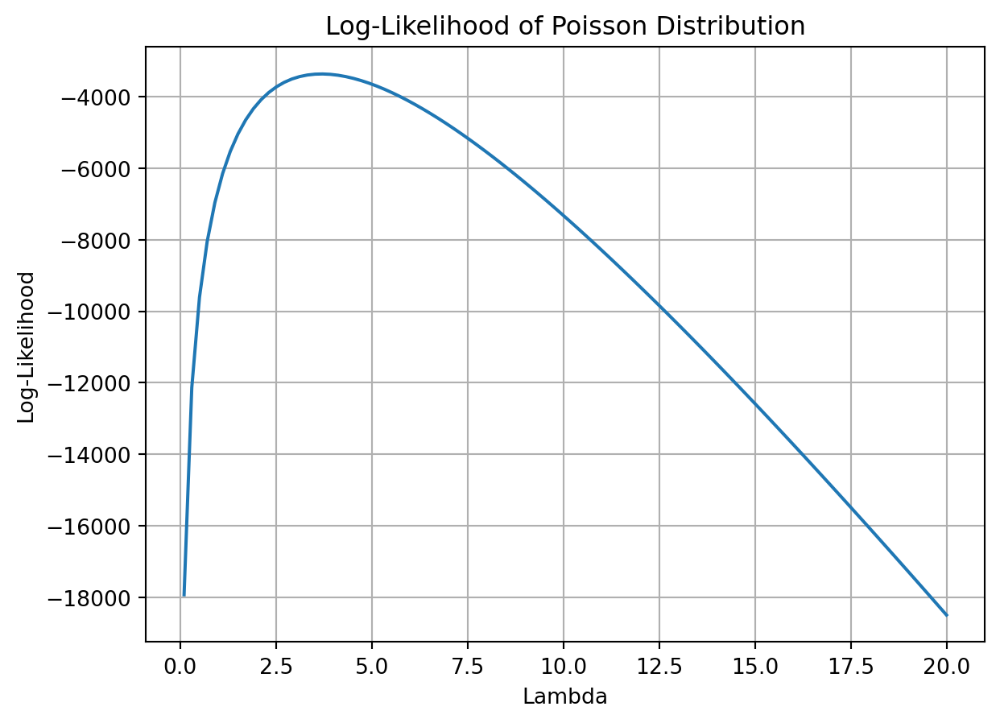
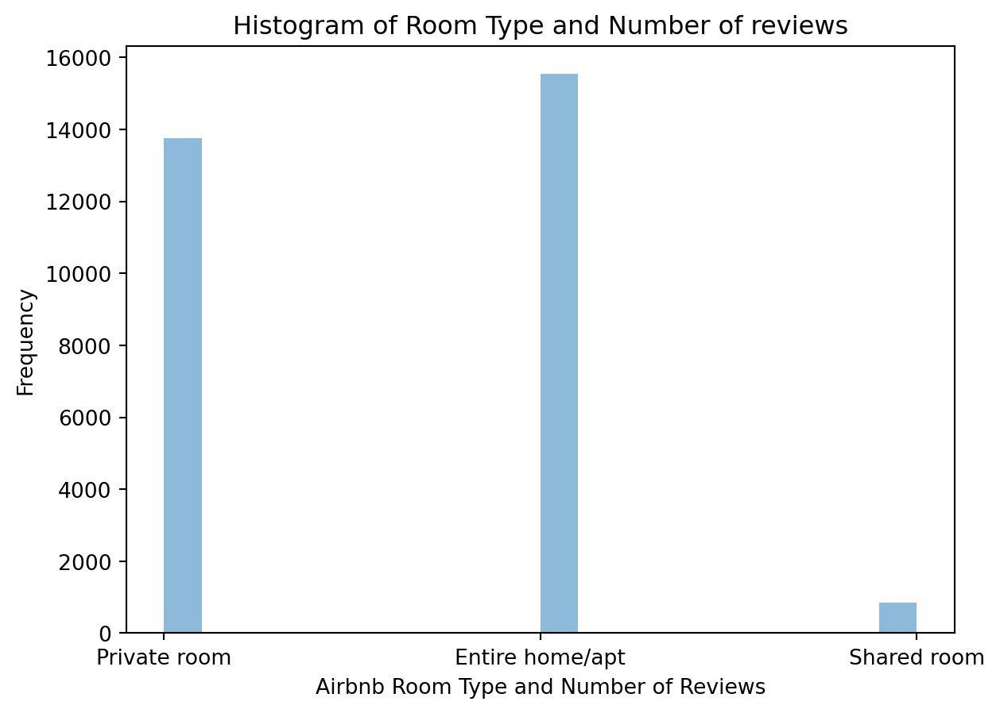

Blueprinty is a small firm that makes software for developing blueprints specifically for submitting patent applications to the US patent office. Their marketing team would like to make the claim that patent applicants using Blueprinty’s software are more successful in getting their patent applications approved compared to traditional methods. Ideal data to study such an effect and prove some type of causal relationship might include the success rate of patent applications before using Blueprinty’s software and after using it if the use of Blueprinty was randomly assigned. Unfortunately, this data is not available.
However, Blueprinty has collected data on 1,500 mature (non-startup) engineering firms. The data includes each firm’s number of patents awarded over the last 5 years, regional location, age since incorporation, and whether or not the firm uses Blueprinty’s software. Blueprinty’s marketing team would like to use this data to make the claim that firms using Blueprinty’s software are more successful in getting their patent applications approved.
Data
import pandas as pd import numpy as np import matplotlib.pyplot as plt blueprinty_df = pd.read_csv("data/blueprinty.csv")blueprinty_df.info()print(blueprinty_df.head())dummy_blueprinty_df = pd.get_dummies(blueprinty_df['region'], prefix='dummy_')# Concatenate the original DataFrame with the dummy variables DataFrameblueprinty = pd.concat([blueprinty_df, dummy_blueprinty_df], axis=1)print(blueprinty.head())
grouped = blueprinty_df.groupby('iscustomer')['patents']means = grouped.mean()# Plot histograms for each groupplt.figure(figsize=(10, 6))for status, group_data in grouped: plt.hist(group_data, alpha=0.5, label=status, bins=20)# Overlay mean linesfor status, mean in means.items(): plt.axvline(mean, color='k', linestyle='dashed', linewidth=1) plt.text(mean +0.1, 50, f'Group {status} Mean: {mean:.2f}', rotation=90)plt.xlabel('Number of Patents')plt.ylabel('Frequency')plt.title('Histogram of Number of Patents by Customer Status')plt.legend()plt.grid(True)plt.show()

The histogram above shows the number of patents submitted by customer status as well as includes mean bars for the two groups. In this data set, 1 indicates that a engineering firm is a blueprinty customer and a 0 indicates that they are not a blueprinty customer. Based on this histogram, Blueprinty’s customers do have a slightly higher average number of patents submitted, 4.09 patents compared to the non-blueprinty customers, 3.62 patents. However, there are a couple of important caveats to these numbers. First, the non-blueprinty customer base not only is larger than that of blueprinty’s, but the range is wider, and especially hovers around the 0-2 patent range. This means that these customers could be bringing the average down among the non-blueprinty customer base. Additionally, Blueprinty customers are not selected at random. Therefore, additional systematic differences in the age and location of the engineering firms could be further contributing to the difference in the mean number of patents submitted.
It may be important to account for systematic differences in the age and regional location of customers vs non-customers. Therefore, we are going to examine the distribution of Blueprinty’s customers by regions and ages.
Customers by Region
grouped = blueprinty_df.groupby('iscustomer')['region']# Plot histograms for each groupplt.figure(figsize=(10, 6))for status, group_data in grouped: plt.hist(group_data, alpha=0.5, label=status, bins=10)plt.xlabel('Number of Customers')plt.ylabel('Frequency')plt.title('Histogram of Distribution of Blueprinty Customers by Region')plt.legend()plt.grid(True)plt.show()

Based on region, Blueprinty has the highest number of customers located in the Northeast. However, the Northeast also has the highest number of engineering firms out of all the other regions. If we were to take the average number of Blueprinty customer’s per region, blueprinty would have approximately 10% of the engineering firms among the various regions.
Customers by age
grouped_age = blueprinty_df.groupby('iscustomer')['age']means_age = grouped_age.mean()# Plot histograms for each groupplt.figure(figsize=(10, 6))for status, group_data in grouped_age: plt.hist(group_data, alpha=0.5, label=status, bins=20)for status, mean in means_age.items(): plt.axvline(mean, color='k', linestyle='dashed', linewidth=1) plt.text(mean +0.5, 75, f'{status} Mean: {mean:.2f} years', rotation=90)plt.xlabel('Age of Customers (years)')plt.ylabel('Frequency')plt.title('Histogram of Customer Age')plt.legend()plt.grid(True)plt.show()

The histogram above shows the distribution of Blueprinty and non-Blueprinty customers by age. On average, Blueprinty’s customers are about 2.54 years younger than other customers. Additionally, there is a slight rightward skew to Blueprinty’s customers where they seem to have clients that have younger businesses, which would contribute to the younger average age of their client’s businesses. We can see that Blueprinty has been targeting younger buinesses compared to older businesses. This makes sense for Blueprinty, and could be part of their business plan. These businesses could have a greater ROI when using the Blueprinty software compared to an older business that has expertise submitting patents.
Estimation of Simple Poisson Model
Since our outcome variable of interest can only be small integer values per a set unit of time, we will use a Poisson density function to model the number of patents awarded to each engineering firm over the last 5 years. Just to note, a Poisson model is a distribution of discrete counts in a pre-determined time frame, hence why we will be using it instead of another distribution model.
We start by estimating a simple Poisson model via Maximum Likelihood.
First, the likelihood function represents the probability of observing the data given a specific value of \(\lambda\). To mathematically write down the likelihood for \(Y \sim \text{Poisson}(\lambda)\), we first need to write down the density of the dependent variable for one observation. For a Poisson distribution, the density function is \(f(Y|\lambda) = e^{-\lambda}\lambda^Y/Y!\).
Using this density function, we can then estimate the likelihood by multiplying the density together N times, where the n represents the number of observations.
Next we want to take the natural log of the density and create the joint log-likelihood by adding the N log-densities together, which can be done due to log properties. Therefore, when we take the natural log of our liklihood function, we get \(\ln f(Y|\lambda) = \sum_{i=1}^{n} (-\lambda + x_i \ln(\lambda) - \ln(\lambda))\) .
Next we want to maximize our likelihood function. To find the maximum likelihood estimate of λ, we need to maximize the logarithm of the likelihood function with respect to λ. This can be done by taking the derivative of the log-likelihood function with respect to λ, setting it equal to zero, and solving for λ: \(\frac{d \ln L(\lambda)}{d\lambda} = 0\)
Once we solve this function for λ, we have the parameter value that best fits the observed data according to the Poisson distribution.
from scipy.special import factorialdef poisson_loglikelihood(lambda_value, Y): log_likelihood = np.sum(-lambda_value + Y * np.log(lambda_value) - np.log(factorial(Y)))return log_likelihood
In python, we can create a function that takes our lambda value and Y and returns our log likelihood value.
# number of patentsY = blueprinty_df["patents"]#range of lambda valueslambda_range = np.linspace(0.1, 20, 100)# log-likelihood for each lambdalog_likelihoods = [poisson_loglikelihood(lambda_val, Y) for lambda_val in lambda_range]plt.plot(lambda_range, log_likelihoods)plt.xlabel('Lambda')plt.ylabel('Log-Likelihood')plt.title('Log-Likelihood of Poisson Distribution')plt.grid(True)plt.show()

When we take the first derivative of our function and set it equal to 0, we are able to solve for the value that maximizes our function. This is because the first derivative indicates a rate or slope, and we are looking for the point of our function that has a 0 slope i.e. some type of peak. From the graphical representation above, we can see that our function has a max somewhere between 2.5 and 5 for our lambda value, or approximately 3.
from scipy.optimize import fsolvedef poisson_loglikelihood_derivative(lambda_value, Y):return np.sum(-1+ Y / lambda_value)# Observed number of patentsY = blueprinty_df["patents"] # Update with your observed value# Solve for lambda using fsolvelambda_mle = fsolve(poisson_loglikelihood_derivative, x0=1, args=(Y,))[0]print(f"Maximum Likelihood Estimate (MLE) for lambda: {lambda_mle:.3f}")
Maximum Likelihood Estimate (MLE) for lambda: 3.685
We don’t need to calculate our first derivative by hand each time, set equal to 0 and run. Instead, we can use the function scipy.optimize and fsolve to solved our function when it is set equal to 0 and find that value that maximizes our function. In this case, this MLE for lambda is 3.685.
Estimation of Poisson Regression Model
Next, we extend our simple Poisson model to a Poisson Regression Model such that \(Y_i = \text{Poisson}(\lambda_i)\) where \(\lambda_i = \exp(X_i'\beta)\). The interpretation is that the success rate of patent awards is not constant across all firms (\(\lambda\)) but rather is a function of firm characteristics \(X_i\). Specifically, we will use the covariates age, age squared, region, and whether the firm is a customer of Blueprinty.
todo: Update your likelihood or log-likelihood function with an additional argument to take in a covariate matrix X. Also change the parameter of the model from lambda to the beta vector. In this model, lambda must be a positive number, so we choose the inverse link function g() to be exp() so that\(\lambda_i = e^{X_i'\beta}\). For example:
todo: Use your function along with R’s optim() or Python’s sp.optimize() to find the MLE vector and the Hessian of the Poisson model with covariates. Specifically, the first column of X should be all 1’s to enable a constant term in the model, and the subsequent columns should be age, age squared, binary variables for all but one of the regions, and the binary customer variable. Use the Hessian to find standard errors of the beta parameter estimates and present a table of coefficients and standard errors.
from scipy.optimize import minimizedef poisson_loglikelihood(beta, X, Y): lambda_values = np.exp(np.dot(X, beta)) log_likelihood = np.sum(-lambda_values + Y * np.log(lambda_values) - np.log(factorial(Y)))# Define covariates matrix X X = blueprinty[['age', 'dummy__Midwest', 'dummy__Northeast', 'dummy__Northwest', 'dummy__South','dummy__Southwest', 'iscustomer']]X['constant'] =1# constant column# Create age squared columnX['age_squared'] = X['age'] **2# Create binary variables for regionsregions = blueprinty['region'].unique()for region in regions[:-1]: X[region] = (blueprinty['region'] == region).astype(int)# Drop one region to avoid multicollinearity, if it existsif regions[-1] in X.columns: X.drop(columns=regions[-1], inplace=True)# Convert X and Y to numpy arraysX = X.valuesY = blueprinty['patents'].values# Initial guess for beta vectorinitial_beta = np.zeros(X.shape[1])# Optimize the log-likelihood function using scipy.optimize#result = minimize(log_likelihood, initial_beta, args=(X, Y), method='BFGS')# MLE vector##mle_vector = result.x# Hessian of the Poisson model#hessian = result.hess_inv# Calculate standard errors of beta parameter estimates#se_beta = np.sqrt(np.diag(hessian))# Present a table of coefficients and standard errors#coefficients_table = pd.DataFrame({'Coefficients': mle_vector, 'Standard Errors': se_beta}, index=['constant', 'age', 'age_squared'] + list(regions[:-1]) + ['iscustomer'])#print(coefficients_table)
/var/folders/bj/t618x2614s9c896326lrdjw40000gn/T/ipykernel_7182/3579629346.py:7: SettingWithCopyWarning:
A value is trying to be set on a copy of a slice from a DataFrame.
Try using .loc[row_indexer,col_indexer] = value instead
See the caveats in the documentation: https://pandas.pydata.org/pandas-docs/stable/user_guide/indexing.html#returning-a-view-versus-a-copy
X['constant'] = 1 # constant column
/var/folders/bj/t618x2614s9c896326lrdjw40000gn/T/ipykernel_7182/3579629346.py:10: SettingWithCopyWarning:
A value is trying to be set on a copy of a slice from a DataFrame.
Try using .loc[row_indexer,col_indexer] = value instead
See the caveats in the documentation: https://pandas.pydata.org/pandas-docs/stable/user_guide/indexing.html#returning-a-view-versus-a-copy
X['age_squared'] = X['age'] ** 2
todo: Check your results using R’s glm() function or Python sm.GLM() function.
AirBnB is a popular platform for booking short-term rentals. In March 2017, students Annika Awad, Evan Lebo, and Anna Linden scraped of 40,000 Airbnb listings from New York City. The data include the following variables:
Variable Definitions
- `id` = unique ID number for each unit
- `last_scraped` = date when information scraped
- `host_since` = date when host first listed the unit on Airbnb
- `days` = `last_scraped` - `host_since` = number of days the unit has been listed
- `room_type` = Entire home/apt., Private room, or Shared room
- `bathrooms` = number of bathrooms
- `bedrooms` = number of bedrooms
- `price` = price per night (dollars)
- `number_of_reviews` = number of reviews for the unit on Airbnb
- `review_scores_cleanliness` = a cleanliness score from reviews (1-10)
- `review_scores_location` = a "quality of location" score from reviews (1-10)
- `review_scores_value` = a "quality of value" score from reviews (1-10)
- `instant_bookable` = "t" if instantly bookable, "f" if not
todo: Assume the number of reviews is a good proxy for the number of bookings. Perform some exploratory data analysis to get a feel for the data, handle or drop observations with missing values on relevant variables, build one or more models (e.g., a poisson regression model for the number of bookings as proxied by the number of reviews), and interpret model coefficients to describe variation in the number of reviews as a function of the variables provided.
Introduction
Here, we have been provided with 40,000 Airbnb listings from New York City. We are assuming that the number os reviews are a good proxy for the number of bookings on the Airbnb platform. Our goal is going to attempt to find the number of bookings an airbnb listing has via a function of the number of reviews the airbnb listing has received.
Data
import pandas as pd import numpy as npimport seaborn as snsimport matplotlib.pyplot as pltimport statsmodels.api as smairbnb = pd.read_csv("data/airbnb.csv")airbnb.head()print(airbnb.isnull().sum())airbnb = airbnb[["id", "days", "last_scraped", "host_since", "room_type", "bathrooms", "bedrooms", "price", "number_of_reviews", "review_scores_cleanliness", "review_scores_location", "review_scores_value", "instant_bookable"]]airbnb.info()airbnb.dropna(inplace =True)
We will first conduct some exploratory data analysis to get a feel for the data. From airbnb.info() we see that we have 13 variables in our dataframe with the max number of rows being 40628. There do be some missing values, such as in bedrooms, host_since, review_scores_cleanliness, review_scores_location, and review_scores_value.
First, we want to examine the distribution of room_type by the number of reviews number_of_reviews.
airbnb_room = airbnb[['room_type']]plt.hist(airbnb_room, bins=20, alpha =0.5)plt.xlabel('Airbnb Room Type and Number of Reviews')plt.ylabel('Frequency')plt.title('Histogram of Room Type and Number of reviews')plt.show()

As we can see, Airbnb tends to have either private rooms and entire homes or apts. There is not much information on shared rooms on the Airbnb platform.
airbnb_price = airbnb[['price']]x_range = (0, 2200)plt.hist(airbnb_price, range=x_range, bins=100, alpha =0.5)plt.xlabel('Price of Airbnb Listing')plt.ylabel('Frequency')plt.title('Histogram of Price')plt.show()
The price of airbnb listing’s range from close to 0 all the way up to 2000 per night. The most common price seems to be around $100/night. Additionally, because we are missing some variables from the price column, we want to potentially fill in the missing information to run a logistic regression from this data.
The output provided is from a Poisson regression model that aims to predict the number of reviews as a proxy for the number of bookings based on various predictor variables. Here’s how we can interpret the model coefficients in the context of the given statement:
Intercept (const): The intercept term represents the expected number of reviews when all predictor variables are zero. In this model, the intercept is 3.5414. This means that when all other predictor variables are zero, we would expect approximately 34.41 reviews.
bathrooms: The coefficient for the bathrooms variable is -0.1286. This suggests that for each additional bathroom, we would expect the number of reviews to decrease by approximately 0.1286, holding other variables constant. This might imply that listings with more bathrooms tend to receive fewer reviews, possibly due to higher pricing or reduced occupancy.
bedrooms: The coefficient for the bedrooms variable is 0.0785. This indicates that for each additional bedroom, we would expect the number of reviews to increase by approximately 0.0785, holding other variables constant. This suggests that listings with more bedrooms tend to receive more reviews, possibly because they accommodate larger groups or families.
price: The coefficient for the price variable is 1.059e-05, but its p-value is 0.154, which is greater than the typical significance level of 0.05. This suggests that the effect of price on the number of reviews is not statistically significant at the 95% confidence level. In other words, changes in price do not have a significant impact on the number of reviews in this model.
review_scores_cleanliness: The coefficient for the review_scores_cleanliness variable is 0.1136. This suggests that for each unit increase in cleanliness score, we would expect the number of reviews to increase by approximately 0.1136, holding other variables constant. This implies that listings with higher cleanliness scores tend to receive more reviews.
instant_bookable: The coefficient for the instant_bookable variable is 0.3321. This indicates that listings that are instantly bookable tend to receive more reviews compared to those that are not, with an increase of approximately 0.3321 in the expected number of reviews.
review_scores_value: The coefficient for the review_scores_value variable is -0.0916. This suggests that for each unit increase in value score, we would expect the number of reviews to decrease by approximately 0.0916, holding other variables constant. This might indicate that listings perceived as offering better value tend to receive fewer reviews.
review_scores_location: The coefficient for the review_scores_location variable is -0.0754. This indicates that for each unit increase in location score, we would expect the number of reviews to decrease by approximately 0.0754, holding other variables constant. This could imply that listings in better locations receive fewer reviews, possibly because they are more expensive or have fewer available dates due to high demand.
Overall, this model suggests that various factors such as the number of bathrooms, bedrooms, cleanliness scores, instant bookability, and value perception significantly influence the number of reviews received, while the effect of price and location scores is not statistically significant at the chosen significance level.